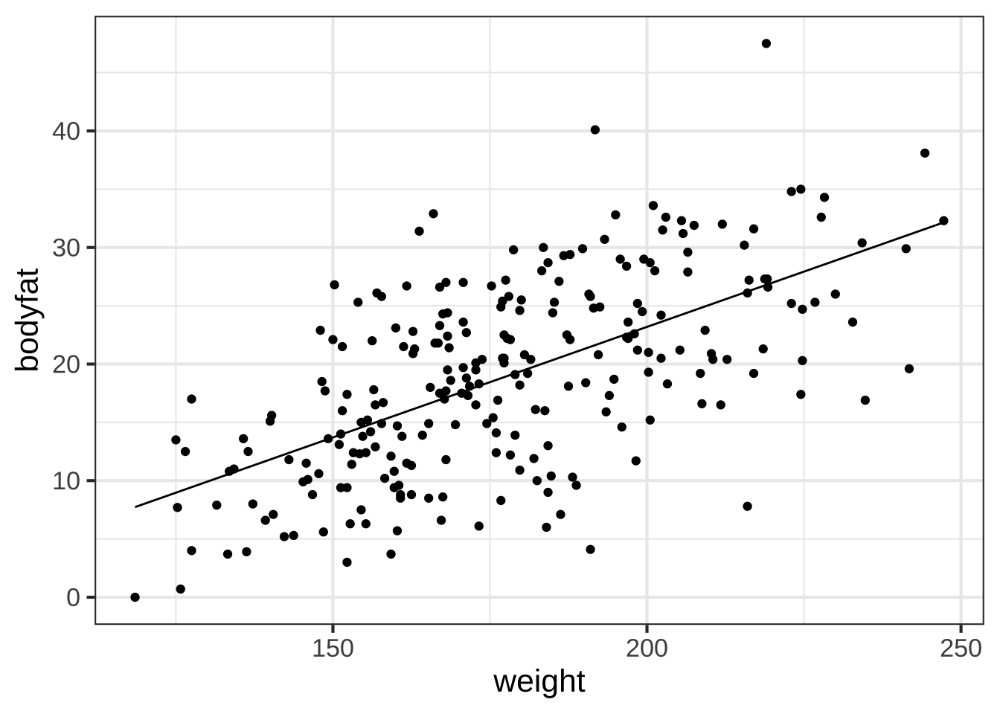
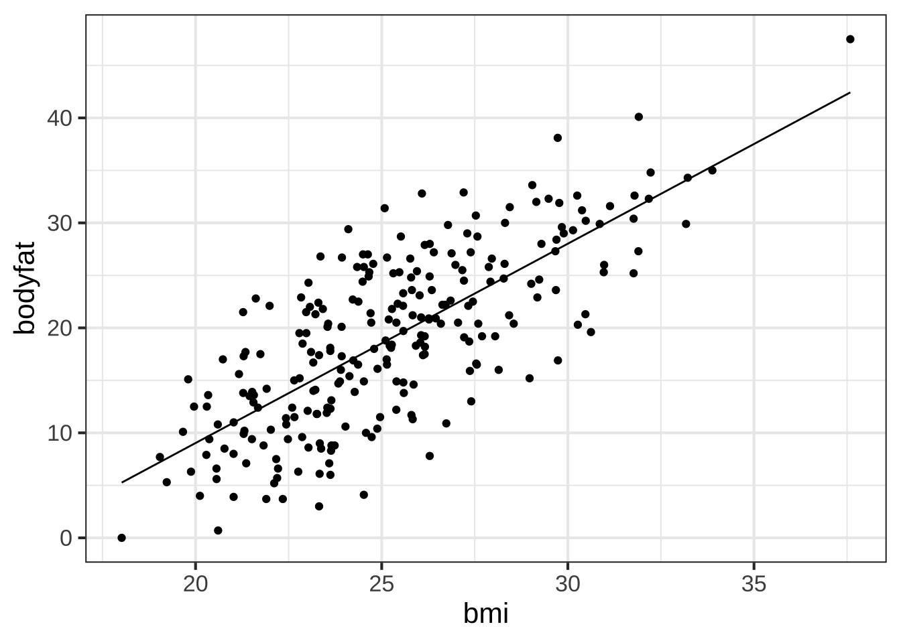
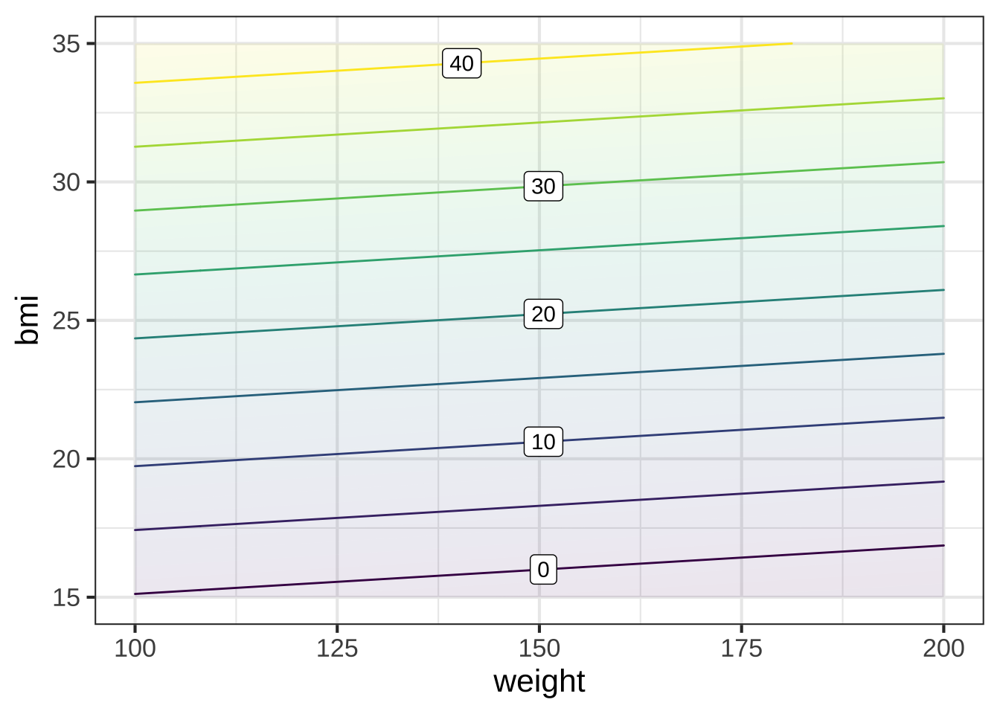
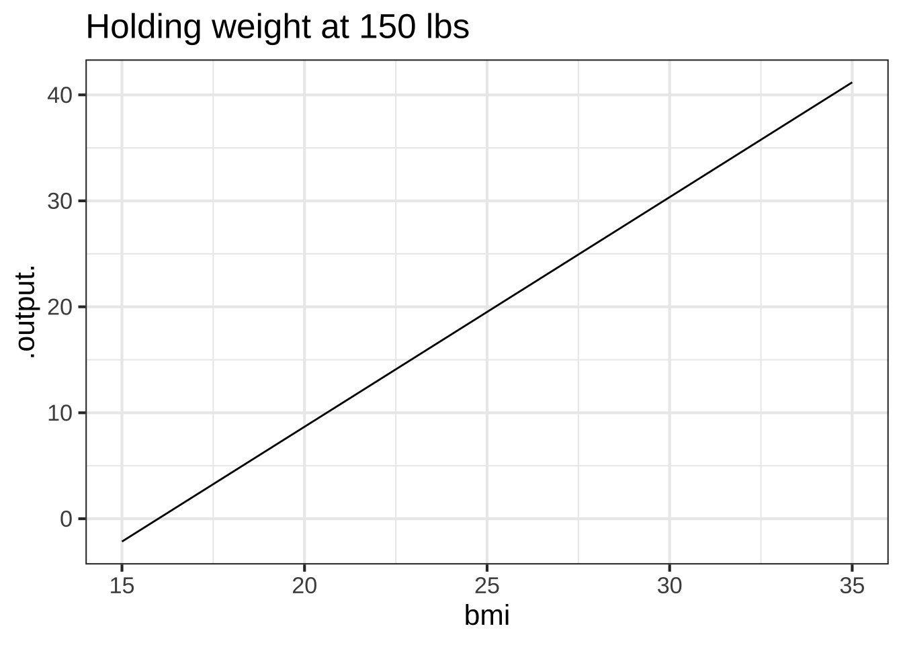
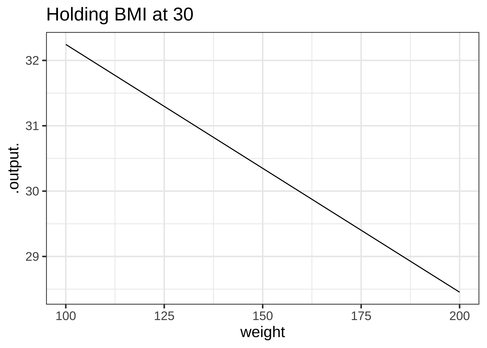

Chapter 42 Least Squares
Chapter not yet released.
It often happens that a model is needed to help organize complex, multivariate data, for purposes such as prediction. The example we will use in this Daily Digital is the measurement of body-fat percentage. It’s thought that this quantity is more useful for monitoring of long-term health than related measures such as weight or body-mass index (BMI).
It’s possible to measure body-fat percentage by an elaborate procedure involving submerging a person in water to measure total body volume, then calculating the persons mass density and converting this to a reading of body-mass percentage. It would be helpful to construct a way of estimating body-fat percentage from easy-to-make measurements such as weight, height, waist circumference, etc.
The overall strategy for developing such a model involves making both the easy-to-make body measurements and the hard-to-make submergence measurement. Then a model function is constructed with the submergence measurement as the output and the easy-to-make measurements as the inputs.
But what form should the function take? One of the most widely used techniques throughout science, industry, medicine, economics, and many other disciplines involves constructing a linear combination of very simple functions of individual variables or sometimes pairs of variables. For instance, for input variables \(x\), \(y\), and \(z\), the simple functions might include
\[f_0(x, y, z) \equiv 1\\ f_1(x,y,z)\equiv x\\ f_2(x, y, z) \equiv y\\ f_3(x, y, z) \equiv z\\ f_4(x, y, z) \equiv x \cdot y\\ f_5(x, y, z) \equiv x \cdot z\\ \mbox{... and so on.} \]
We’re going to use the strategy of linear combinations of simple functions to investigate the problem of finding body-fat percentage as a function of easy-to-make measurements.
42.1 The data
The data we have at hand is a data frame called Body_fat containing measurements on 252 males. The variables in Body_fat include the body-fat percentage (bodyfat), age, weight, height, and body-mass index (bmi) as well as a series of circumferences: around the neck, chest, abdomen, hip, thigh, knee, angle, biceps, forearm, and wrist.
First, a quick demonstration that body-fat percentage is not an obvious simple function of weight or BMI. The commands you will use in this Daily Digital are almost all demonstrated here:
lm()finds the linear combinations of the inputs that best approximate the outputmakeFun()reformats the linear combinations as a function suitable for plottinggf_point()andslice_plot()should already be familiar to yoursquared()calculates how close the predictions are to the actual values. The R\(^2\) statistic is always in the range 0 to 1. The closer it is to one, the more predictive the model.
mod1 <- lm(bodyfat ~ weight, data = Body_fat)
fun1 <- makeFun(mod1)
mod2 <- lm(bodyfat ~ bmi, data = Body_fat)
fun2 <- makeFun(mod2)
gf_point(bodyfat ~ weight, data = Body_fat) %>%
slice_plot(fun1(weight) ~ weight)
gf_point(bodyfat ~ bmi, data = Body_fat) %>%
slice_plot(fun2(bmi) ~ bmi)
rsquared(mod1)## [1] 0.3722742rsquared(mod2)## [1] 0.5547538
The graphs show a correlation between bodyfat and both weight and bmi individually. But, at any given weight or any given BMI, there is a big range of body-fat percentage, so clearly bodyfat is not just an alias for weight or BMI. The R\(^2\) for the models shows that bmi is a better predictor of body-fat percentage than weight.
You’ve seen enough vector mathematics now to understand exactly what R\(^2\) is. When the output-variable vector is exactly perpendicular to the subspace spanned by the input vectors in the linear combination, R\(^2\) is zero. When the output-variable vector is completely aligned the the subspace spanned by the input vectors, R\(^2\) is one. Between these two extremes, R\(^2\) is the cosine-squared of the angle between the output vector and the subspace spanned by the input vectors. There are two very important consequences to this definition:
- If you include a new input vector in the linear combination, the R\(^2\) will generally go up (and will certainly never go down). The reason is that the subspace spanned by the expanded model is usually larger (and never smaller) than the subspace spanned by the original model.
- If your data has \(n\) rows, using \(n\) random-number vectors will produce an R\(^2\) of 1, because the subspace spanned by the vectors will be the entire vector space. Consequently, regardless of what the output vector is, it will be entirely contained within the input-vector subspace.
A small increase in R\(^2\) will happen even when the new vector has nothing at all to do with the output vector. In statistics, you will learn what “small” means and how much R\(^2\) should go up in order to have a plausible claim that the new vector is meaningfully contributing to the model.
Let’s see how well we can predict bodyfat if we use both weight and bmi.
mod3 <- lm(bodyfat ~ weight + bmi, data = Body_fat)
fun3 <- makeFun(mod3)
contour_plot(fun3(weight, bmi) ~ weight + bmi,
domain(weight = c(100,200), bmi = c(15, 35)))
rsquared(mod3) # mod3 is bodyfat ~ weight + bmi## [1] 0.5585916slice_plot(fun3(weight = 150, bmi) ~ bmi, domain(bmi = c(15, 35))) %>%
gf_labs(title = "Holding weight at 150 lbs")
slice_plot(fun3(weight, bmi = 30) ~ weight, domain(weight = c(100,200))) %>%
gf_labs(title = "Holding BMI at 30")
You can see from the contour graph that at a weight of 150 lbs and a BMI of 25, the predicted body-fat percentage is just a hair under 20%. You can see from the R\(^2\) that the two-input model is not any better than the model with just BMI as the input.
The slice plots show, as the name suggests, a slice through the contour plot. In the first slice, the weight is being held constant at 150 lbs. Over the range of BMI shown, the body-fat percentage changes very substantially: from 0 to 40%. That is, BMI has a strong relationship to body fat percentage even when holding weight constant.
The second slice holds the bmi to 25. Over the range of weights, the body-fat percent changes only slightly, from 18% to 21%. Thus, knowing BMI, additional knowledge of weight tells you almost nothing about body fat percentage.
The strategy here is to build a model with multiple inputs, then hold some of those inputs constant while examining the model output with respect to the remaining inputs. This “hold some inputs constant” is a powerful technique for interpreting complex models.
42.2 The fitting problem
42.3 The residual vector
Residual connects Mx to b. (Review from B5-projection.) Idea of fitting, make the residual as small as possible. Using sum of squares let’s us translate the problem into a projection problem.
42.4 Solving M x ≈ b: Part II
In previous we have found the x for a given M and b using the R function qr.solve(M, b). This operation of solving is so important in quantitative work in so many fields, that numerous software programs package it up in other ways that make it easy to use.
One example of this re-packaging is the lm() function in R. “lm” stands for “linear modeling,” and not only finds the x that solves M x ≈ b, but also calculates numerous indicators of the statistical reliability of the result. The lm() function is one of the most widely used in R, and R is one of the most widely used software systems for data science, so we’re going to spend a little time with it.
The mtcars data frame shown below records several aspects of the design and performance of some classic cars from 50 years ago.
The variables include such things as fuel economy (mpg), the cylinder displacement (disp), whether the car had an automatic transmission (am) or a V-shaped engine (vs), and the number of carburetors. (carb. Ask your grandparent what a carburetor is.) We won’t be concerned here with the mechanics of how these cars worked. (But I do point out how poor the fuel economy was compared to today’s cars. A Datsun 710 is a small, low-performance car and it got just 22.8 mpg, not much better than a Maserati Bora.) Our interest here is just with the mechanics and meaning of solving \(\overrightarrow{\mathbf M}\cdot \vec{x} \approx \vec{b}\).
As an example, let’s consider the time it takes each car to go one-quarter mile from a standing start: the variable qsec. And let’s suppose we hypothesize that the engine power (hp: horsepower) is a major factor. A starting analysis might look like this: a graph of the data with a sketch of a straight-line model, then quantitative calculation of the model using lm(). As you will see when you run the code in the following sandbox qsec tends to go down (that is, get faster) with increasing horsepower. The coefficients give the slope and intercept of the least-squares straight-line model: for every 100 extra horsepower, the quarter-second time goes down (on average) by 1.8 seconds.
gf_point(qsec ~ hp, data = mtcars) %>%
gf_lm(interval = "confidence")
model <- lm(qsec ~ hp, data = mtcars)
coef(model) # report model coefficients## (Intercept) hp
## 20.55635402 -0.01845831rsquared(model) # report R-squared## [1] 0.5015804::: {.example data-latex=""}
Turn this question into an example.
Question F What about the coefficients indicates that qsec goes down (on average) with hp?
- The sign of the
hpcoefficient.Right!
- Nothing about the coefficients. It’s the graph that shows this.︎✘ The graph does indeed show the going-down pattern. In fact, the straight line shown on the graph is exactly that represented by the coefficients. But the coefficients contain all the information we need to draw the line in the
gf_lm()layer
- That the intercept is greater than the
hpcoefficient.︎✘
“R-squared” is a simple statistical summary of the model. A typical description of R-squared might be, “hp explains about 47% of the variation in qsec.” (There’s much more to be said about the statistics of the model. You can see a standard statistical report by using the command summary(model).)
42.5 lm() and qr.solve
In this section, we’re going to see how qr.solve() is the essential engine of lm(). The following sandbox repeats the model-building command and omits the graphic (to save space). You’re going to add additional commands to translate the model into its qr.solve() equivalent.
model <- lm(qsec ~ hp, data = mtcars)
M <- model.matrix(qsec ~ hp, data = mtcars)
M## (Intercept) hp
## Mazda RX4 1 110
## Mazda RX4 Wag 1 110
## Datsun 710 1 93
## Hornet 4 Drive 1 110
## Hornet Sportabout 1 175
## Valiant 1 105
## Duster 360 1 245
## Merc 240D 1 62
## Merc 230 1 95
## Merc 280 1 123
## Merc 280C 1 123
## Merc 450SE 1 180
## Merc 450SL 1 180
## Merc 450SLC 1 180
## Cadillac Fleetwood 1 205
## Lincoln Continental 1 215
## Chrysler Imperial 1 230
## Fiat 128 1 66
## Honda Civic 1 52
## Toyota Corolla 1 65
## Toyota Corona 1 97
## Dodge Challenger 1 150
## AMC Javelin 1 150
## Camaro Z28 1 245
## Pontiac Firebird 1 175
## Fiat X1-9 1 66
## Porsche 914-2 1 91
## Lotus Europa 1 113
## Ford Pantera L 1 264
## Ferrari Dino 1 175
## Maserati Bora 1 335
## Volvo 142E 1 109
## attr(,"assign")
## [1] 0 1The inputs to qr.solve() are the matrix M and the target vector b.
In linear modeling, the matrix M is called the “model matrix.” There’s a convenient function, model.matrix() that will construct the matrix from a tilde expression and a data frame. Notice that the arguments for model.matrix() are exactly the same as in the corresponding call to lm(). Run the code to see the resulting M.
::: {.example data-latex=""}
Turn this into an example about how names are given to the coefficients.
Question G The model.matrix() function gives names to the individual vectors in M. What are these names?
- (Intercept) and hpExcellent!
- Merc 230 and Pontiac Firebird︎✘
- \(\vec{u}\) and \(\vec{v}\)︎✘
[[1] 0 1︎✘
In Block 1, we had a variety of functions with something in common, such as …
\[f(x) \equiv m x + B\\ g(x) \equiv A \sin(\frac{2\pi}{P}t) + C\\ h(x) \equiv A e^{k t} + C\]
Question: Explain how an
(Intercept)vector relates to one of the coefficients in each of these functions.
Now for \(\vec{b}\). To create the target vector \(\vec{b}\), the lm() function looks to the variable named on the left side of the tilde expression (namely, qsec). It simply grabs that variable, unaltered, from the data frame. You can do this directly by adding the following command to the end of the sandbox:
b <- mtcars$qsecQuestion: Once you have constructed
Mandbas described above, use them to find the\vec{x}that satisfiesM\vec{x}≈\vec{b}. Explain whatxmatches in themodelcreated bylm().
42.6 R\(^2\), Residuals, etc.
Little - r
The sandbox below recapitulates the commands used to create M and b for the qsec ~ hp model and from them to calculate x.
M <- model.matrix(qsec ~ hp, data = mtcars)
b <- mtcars$qsec
x <- qr.solve(M, b)Add to the sandbox a command to calculate \(\widehat{\ {b}\ }\). Call this vector bhat.
Question H What is the square of the length of bhat? (Hint: the square of the length is even easier to calculate than the length.)
- 3780.4Correct.
- 12︎✘ That’s how many components there are in
bhat. The length refers to the sizes of the components.
- 3805.5︎✘ That’s the length of
b. We’re asking aboutbhat.
bhatis a vector.︎✘ True. But what is the length of the vector?
In statistics, the amount of b that is explained by the model is the length of a vector closely related to bhat. Add this command to the sandbox:
explained_vec <- bhat - mean(bhat)Similarly, the amount to explain is the length of this vector:
to_explain_vec <- b - mean(b)There is a simple relationship between R-squared (which was 47.1%) and the squared lengths of
explained_vecandto_explain_vec. Figure it out and say what it is.